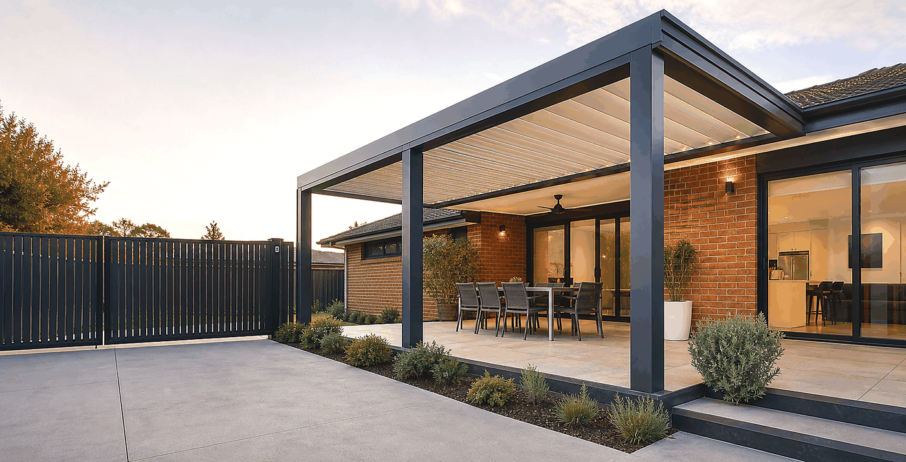

Project example
Custom pergola planning for the western suburbs and Geelong corridor.
This sample project shows how MJD can present completed pergola work once real photos, suburb, dimensions and materials are supplied by the client.
Request a pergola quote
Project scope
Shade, weather protection and better outdoor use.
A strong pergola project page should describe the customer's problem, the selected roof style, approximate dimensions, colour, access conditions and the result after installation. This helps homeowners compare their own backyard or side area with a real MJD project.
Replace with real suburbExample: Point Cook, Werribee, Tarneit or another approved suburb.
Add project detailsLength, width, height, roof type, colour, posts, gutters and any special site constraints.
Add client-approved photosBefore, during and after images make the project page much more trustworthy.